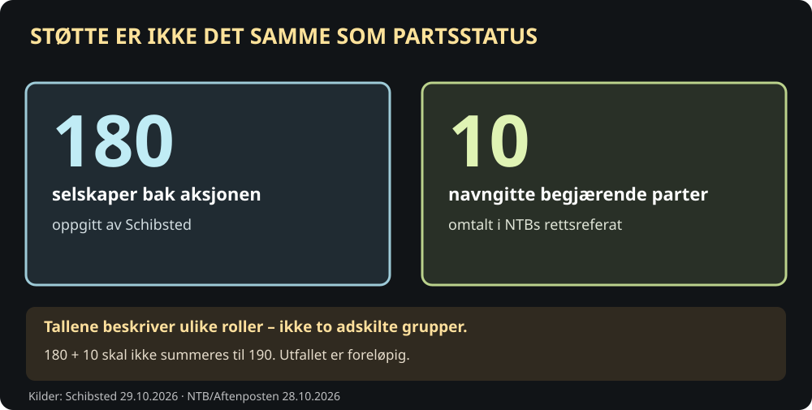
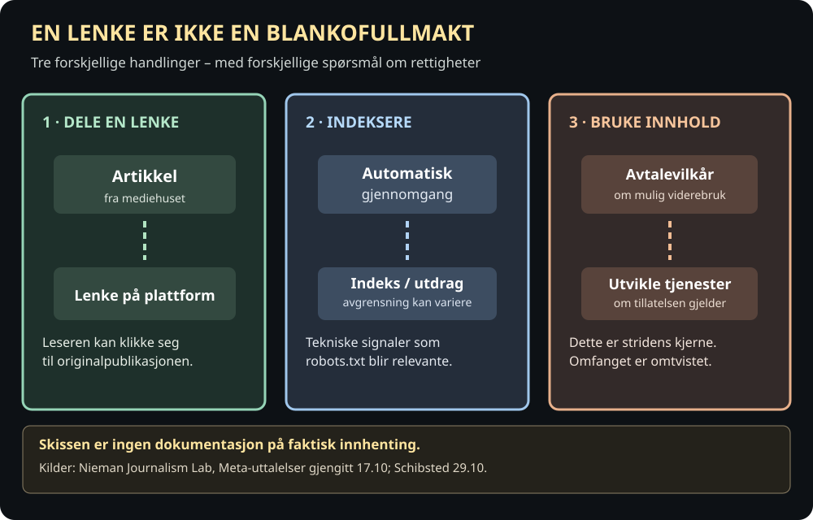
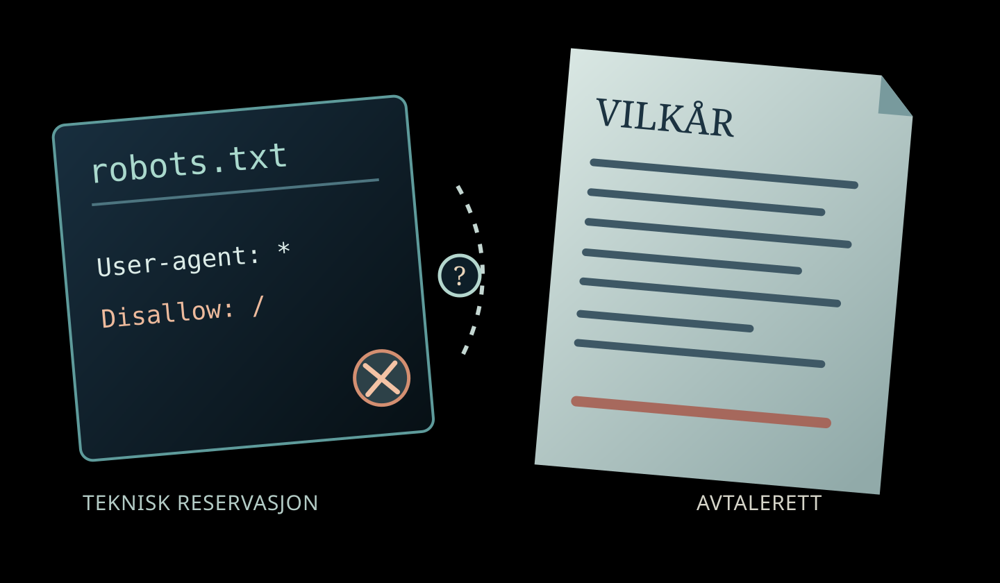

Hvem bestemmer over journalistikken når plattformene setter vilkårene?
I den digitale offentligheten er Facebook og Instagram viktige steder for aviser som vil nå leserne sine. Men hva skjer hvis tilgangen til publikum blir knyttet til at mediene må godta omfattende bruk av innhold de selv har betalt for å produsere? Dette spørsmålet ligger under konflikten mellom norske mediehus og Meta.
Oppdatert 12. november: Meta bekreftet 6. november at de planlagte endringene i flere sett med kommersielle vilkår er satt på pause. Endringene trer derfor ikke i kraft 20. november; de gjeldende vilkårene fortsetter inntil videre. Den britiske konkurransemyndigheten CMA har fortsatt en åpen undersøkelse og understreker at det ikke er fastslått lovbrudd. Dette er en oppdatering av selskapets og myndighetenes prosess, ikke en ny dom. Reuters 6. november · CMA saksstatus.
Den 26. oktober gikk en gruppe norske medieselskaper til Oslo tingrett for å stanse varslede endringer i Metas kommersielle vilkår. To dager senere, 28. oktober, fikk de en midlertidig forføyning: Meta Platforms Ireland Limited ble forbudt å innføre den omstridte endringen inntil lovligheten er rettskraftig avgjort. Dette er et foreløpig rettslig inngrep, ikke en endelig dom.
Bak begjæringen står blant andre NRK, TV 2, Schibsted, Amedia, Polaris Media, Aller Media, Dagens Næringsliv, Mentor Medier, NTB og Hordaland Folkeblad. Schibsted oppgir at 180 medieselskaper står bak den norske aksjonen. Ti navngitte medieforetak framgår av NTBs gjengivelse av begjæringen. Som en juridisk gjennomgang oppdatert 6. november presiserer, retter den midlertidige forføyningen seg mot de formelle partene i saken; støttetallet må ikke forveksles med hvem som omfattes av kjennelsen. Det er viktig å skille antallet virksomheter som støtter saken, fra navnene på foretakene som er oppført i selve begjæringen.
180 støttespillere, ti formelle parter


Et mediehus kan legge ut en lenke til en artikkel på en plattform uten dermed å ønske at hele artikkelen, billedarkivet eller annet innhold på nettstedet skal kunne samles inn til nye formål. Å distribuere journalistikk, å indeksere den og å bruke den til å utvikle kommersielle tjenester er forskjellige handlinger. Det er nettopp grensene mellom dem som er blitt uklare.
Hva betyr det å dele, indeksere og bruke journalistikk?


Metas første utkast til vilkår nevnte automatisk innhenting fra domener, nettsider og nettadresser knyttet til virksomhetenes produkter og tjenester. I den opprinnelige ordlyden var det å «train» – trene – blant de uttrykkelig nevnte mulige bruksområdene. Dermed ble frykten for bruk til KI-utvikling en sentral del av striden.
Etter kritikken endret Meta teksten 16. oktober. Ordet «train» ble fjernet, og formålet ble avgrenset til reklame- og bedriftsprodukter. Men klausulen om å hente og analysere innhold fra tilknyttede nettsteder var fortsatt vid. Jurister intervjuet av Nieman Journalism Lab mener den nye formuleringen fremdeles kan åpne for omfattende bruk, blant annet til utvikling av slike produkter. Dette er en juridisk tolkning, ikke en fastslått virkning.
Meta bestrider at vilkårene gir selskapet nye rettigheter til å overstyre reservasjoner på nettstedene. Ifølge Meta kan eiere fortsatt bruke robots.txt for å signalisere at en automatisk innhenter ikke skal få tilgang. Selskapet sier at oppdateringen handler om reklame- og bedriftsfunksjoner, ikke om å hente journalistikk fra nyhetssider. Samtidig har juristene påpekt at den reviderte avtaleteksten ikke uttrykkelig lovfester dette forbeholdet.
En robots.txt-fil er et teknisk signal fra nettstedet til automatiserte besøkende. En avtale er noe annet: Den sier hva partene mener at de kan tillate eller kreve. Dersom et teknisk nei og en avtaletekst peker i ulik retning, er spørsmålet ikke løst bare ved at selskapet forsikrer om hvordan teknologien vanligvis brukes.
Fire spørsmål bak én omstridt avtale
Velg et perspektiv. Eksemplene er pedagogiske, ikke funn om at Meta har brukt journalistenes innhold i strid med loven.
Kildegrunnlag: Nieman Journalism Lab, juridisk gjennomgang, CMA.
De norske mediene har formulert tre krav: Reservasjoner mot innhenting skal respekteres; bruk av journalistikk til KI skal avtalefestes frivillig, med mulighet for betaling; og de som sier nei, skal ikke risikere dårligere synlighet eller utestengelse fra plattformene. Dette er mediebransjens krav, ikke bestemmelser en domstol allerede har fastsatt for en framtidig avtale.
Rettsavgjørelsen 28. oktober bygger på at retten i denne foreløpige behandlingen så alvorlige problemer ved den varslede endringen. I gjengivelsen fra NTB beskriver tingretten en situasjon der mediene kan bli stilt overfor et vanskelig valg: å godta omfattende rettigheter for Meta eller miste viktig tilgang til publikum. Kjennelsen omtaler også risiko knyttet til innhold bak betalingsmur, men vi har ikke selv sett den fullstendige rettsteksten.

Er den norske kjennelsen en dom mot Meta for ulovlig innhenting?
Nei. Retten ga en midlertidig forføyning som hindrer en omstridt vilkårsendring mens lovlighetsspørsmålet behandles. Dette er ikke et vedtak om at Meta faktisk har hentet innhold bak betalingsmur, og heller ikke en endelig avgjørelse av konkurranserettslige spørsmål.
Meta fikk ikke forklare seg i et rettsmøte før første kjennelse og kunne derfor begjære en etterfølgende behandling. NTBs rettsreferat · fagjuridisk gjennomgang.
Meta ble ikke hørt i rettsmøte før den midlertidige kjennelsen. Selskapet kan derfor kreve etterfølgende muntlig forhandling og framlegge sin side av saken. Den forskjellen er vesentlig: Et foreløpig forbud beskytter mot en mulig skade mens lovspørsmålet undersøkes; det fastslår ikke skyld eller endelige rettigheter.
Opprinnelig var endringene varslet fra 30. oktober. Datoen ble flyttet til 20. november, og 28. oktober opplyste Meta at innføringen ble utsatt på ubestemt tid mens selskapet konsulterer bransjen. De gjeldende vilkårene skulle fortsette i mellomtiden. Meta bekreftet senere, 6. november, at fire grupper foreslåtte vilkårsendringer var satt på pause, og at gjeldende vilkår fortsatt gjelder. Det finnes ingen ny offentlig startdato i Reuters-oppdateringen fra 6. november.
Saken er ikke lenger bare norsk. Den britiske konkurransemyndigheten CMA åpnet 30. oktober en formell undersøkelse av om Metas vilkår kan innebære misbruk av dominerende stilling og urimelige handelsbetingelser for utgivere og andre virksomheter. CMA understreker at undersøkelsen nettopp er startet: Det er ikke fattet noen avgjørelse om Meta har brutt loven. Meta sier ifølge Reuters at selskapet ikke mener det finnes grunnlag for en slik undersøkelse, og at det ønsker å forklare sin tilnærming til tilsynet.
Hvordan striden utviklet seg
Klikk på datoene for å skille mellom et forslag, en midlertidig rettsavgjørelse og en regulatorisk undersøkelse.
Den foreslåtte ordlyden omtales
Nieman Journalism Lab beskriver Metas forslag om utvidet bruk av innhold fra nettsteder knyttet til bedriftskontoer. Mediebransjen uttrykker bekymring.
Meta endrer teksten
Ordet «train» tas ut, og formuleringen begrenses til reklame- og bedriftsprodukter. Jurister mener fortsatt at den foreslåtte klausulen kan være vid.
Norske mediehus går til retten
Ti navngitte foretak ber Oslo tingrett stanse endringen. Schibsted oppgir bredere støtte fra 180 medieselskaper.
Oslo tingrett gir midlertidig stans
Kjennelsen er en foreløpig forføyning, ikke en endelig avgjørelse om lovlighet. Meta varsler dialog med bransjen.
Britiske CMA åpner undersøkelse
Myndigheten gransker mulig misbruk av dominerende stilling, men sier uttrykkelig at lovbrudd ikke er fastslått.
Meta setter vilkårene på pause
Meta offentliggjør at de omstridte foreslåtte endringene ikke trer i kraft 20. november. Eksisterende vilkår gjelder inntil videre.
Kilder: Nieman Lab, 5. november, Schibsted, CMA 30. oktober og Reuters 6. november.
Dette angår også mindre aviser. En lokalredaksjon kan være avhengig av å dele lenker til egne saker på store plattformer og samtidig ha små ressurser til forhandlinger om bruksrett og rettslig bistand. At større medieselskaper tar saken til retten, gjør ikke problemstillingen mindre relevant for mindre aktører.
Et tenkt eksempel viser hvorfor skillet er viktig: En lokalavis deler et oppslag om kommunens økonomi på Facebook for at folk skal finne saken. Avisen ønsker gjerne at lenken skal bli sett. Men det er ikke gitt at den derfor ønsker at hele artikkelarkivet skal kunne samles inn for å utvikle en annen tjeneste. Hvilket samtykke som faktisk er gitt, og hva det omfatter, må kunne avgjøres presist.
Det er heller ikke dokumentert i kildene til denne artikkelen at Meta faktisk har hentet betalingsinnhold fra norske mediehus med hjemmel i de foreslåtte nye vilkårene. Striden gjelder særlig hvilke rettigheter avtaleteksten kunne ha skapt. En mulig tilgang må ikke forveksles med bevist innhenting.
Spørsmålet videre er både juridisk og praktisk: Vil Meta legge fram en ny, snevrere ordlyd? Vil reservasjoner få en uttrykkelig plass i avtalen? Kan norske og britiske myndigheter komme til forskjellige vurderinger? Og kan et mediehus takke nei uten å miste kontakten med lesere som får nyhetene sine gjennom de store plattformene?
Et åpent samfunn trenger ikke bare aviser som kan publisere fritt. Det trenger også at avisene kan bestemme hvordan deres arbeid brukes, og at leserne kan finne journalistikken uten at publisering blir gjort avhengig av uklare rettighetsavståelser. Hvem som får sette vilkårene mellom journalistikken og publikum, er derfor den egentlige striden.
Hva er viktigst i en avtale mellom medier og plattformer?
Frivillig leserspørsmål, ikke en representativ meningsmåling. Bare ditt eget svar lagres lokalt. Ingen fellestall eller prosenter vises.
Avstemningen trenger JavaScript og sender ikke svar til noen server.
Du valgte:
Dette viser bare ditt eget svar.